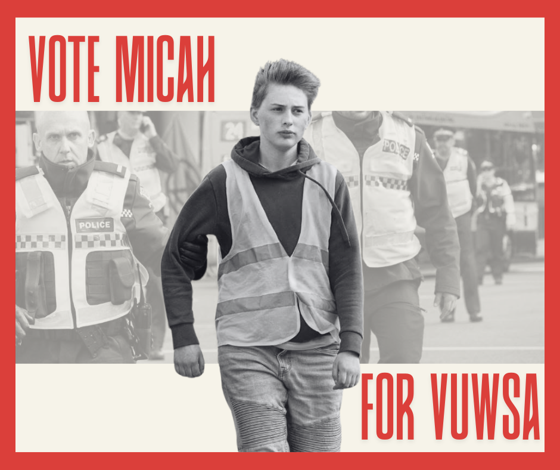

He uri tēnei nō Ngāti Kahungunu ki Wairoa, me Ngāti Rakaipaaka.
My name is Micah, and I’m finishing off a Bachelor of Health majoring in Health Policy after transferring from veterinary school.
I grew up in Wellington and have been involved in grassroots organising since I can remember. Being arrested for climate protesting at age 15, a delegate for the PSA, an organiser within Wellington Against Racism and Fascism (WARF), a climate activist within Extinction Rebellion, and a coordinator for the Wellington Student Volunteer Army (WSVA) during COVID-19 in collaboration with VUWSA, among a plethora of other roles.
More recently, I served on the executive of both the Massey Students’ Association - Te Tira Ahu Pae and the Veterinary Students’ Association - MUVSA. I’ve sat on a variety of academic boards and committees, co-founded SJP Massey, and founded the only club in Palmerston North dedicated to civic engagement.

Throughout my time as an activist, I’ve learned a lot, but most importantly, I’ve learned about the power of community-led organising. This is something I hope to bring to VUWSA.